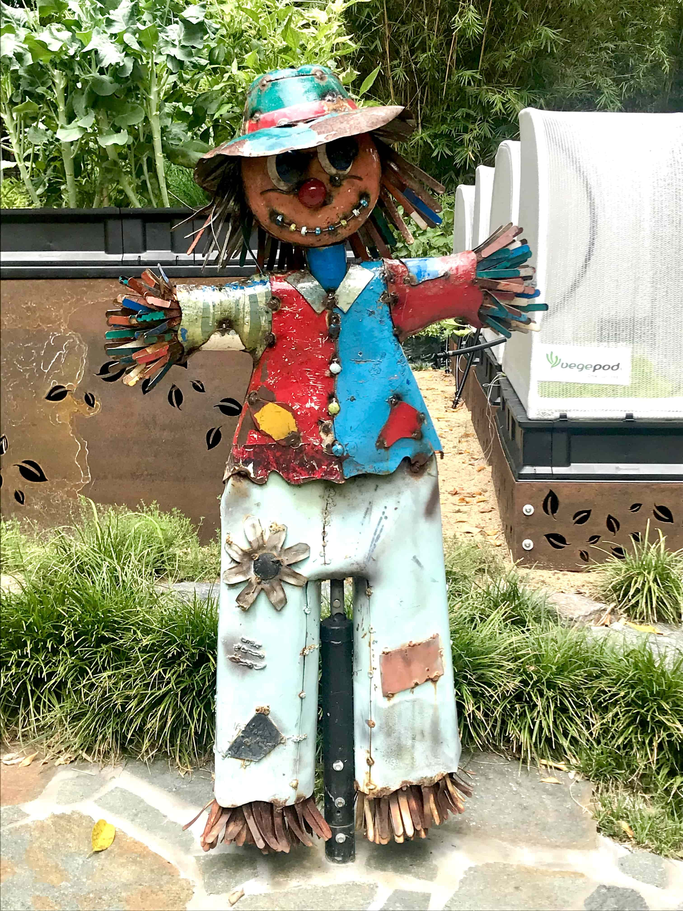
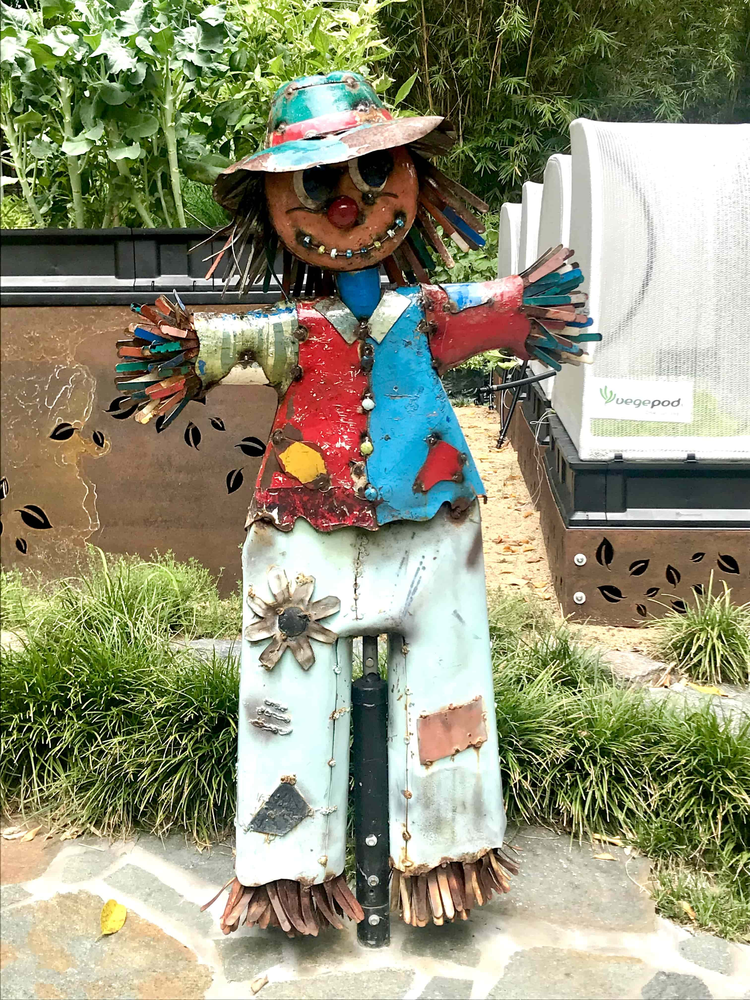
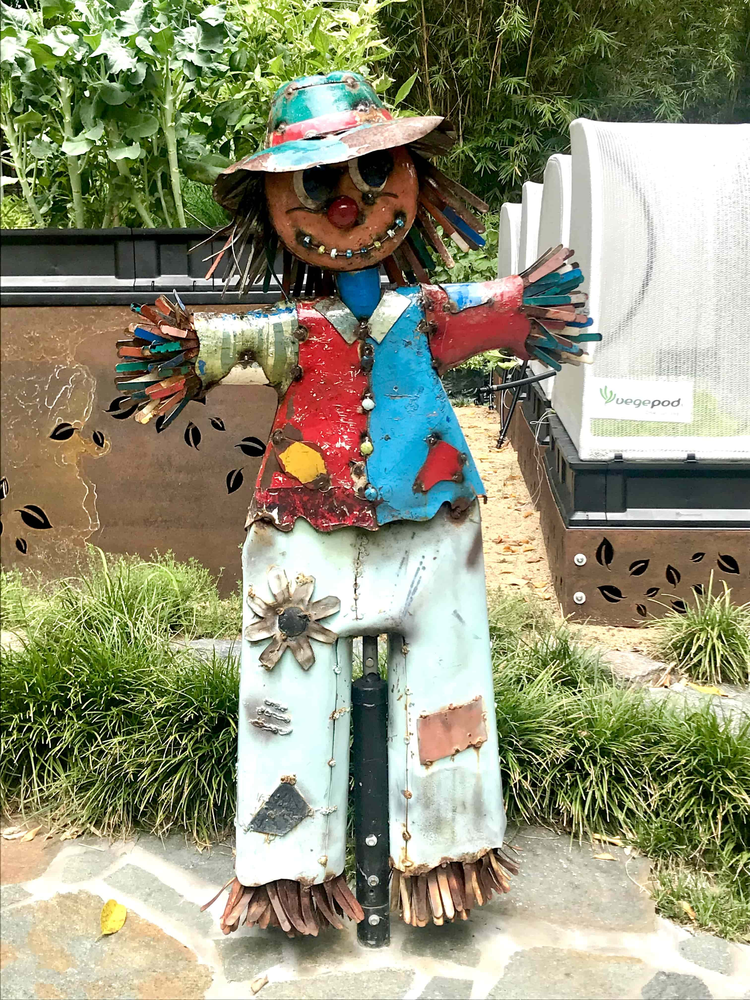
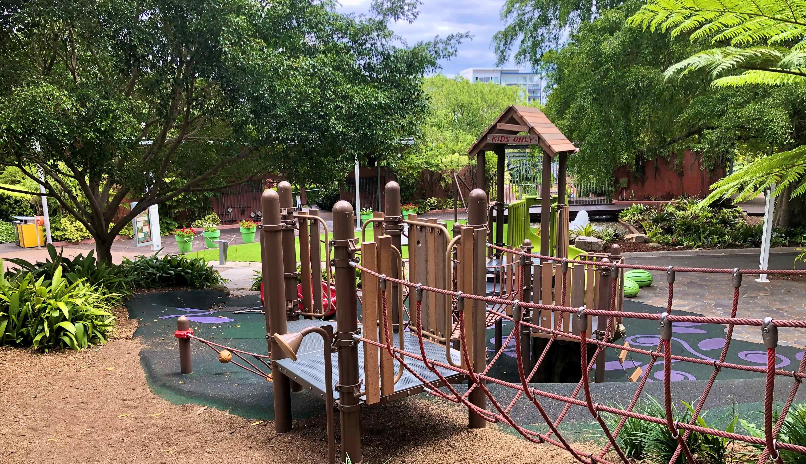
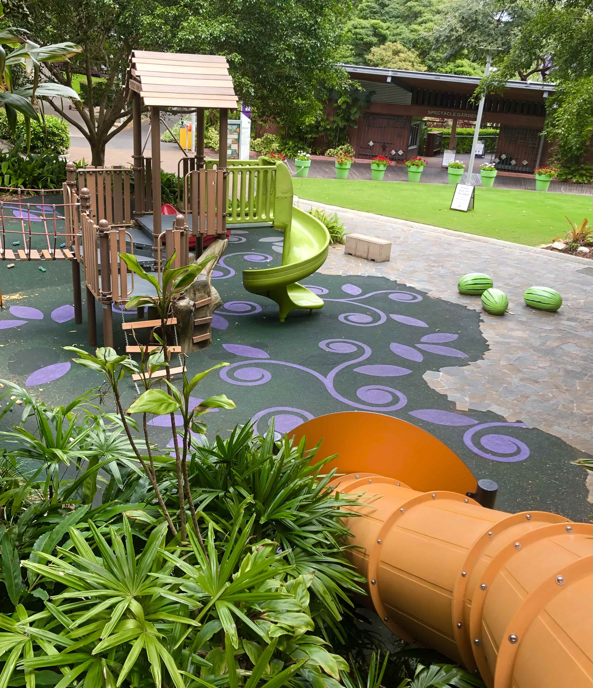

Play grounds
The Roma Street Parklands are home to not just one, but two exciting playgrounds!

Pictured above on the left is the first playground, and on the right is the funny scarecrow from the veggie garden.

Bring your friends, play games and have an adventure! The possibilities are endless.


The playgrounds are always buzzing with kids, so come down after school, or on the weekends to meet some new friends!